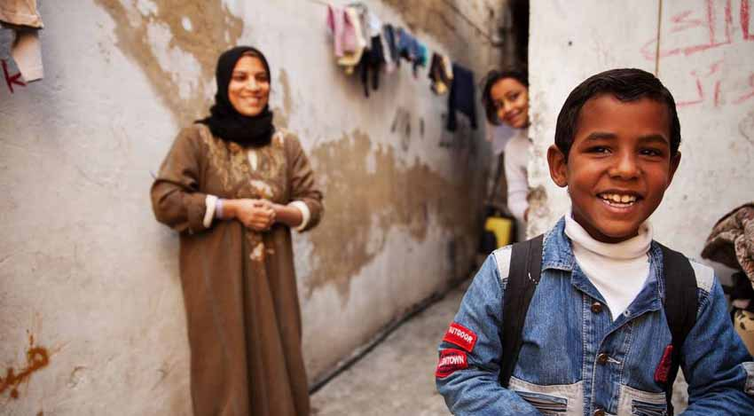

Extreme poverty rates have been cut by more than half since 1990. While this is a remarkable achievement, one in
five people in developing regions still live on less than $1.25 a day, and there are millions more who make little
more than this daily amount, plus many people risk slipping back into poverty.
Poverty is more than the lack of income and resources to ensure a sustainable livelihood. Its manifestations include
hunger and malnutrition, limited access to education and other basic services, social discrimination and exclusion as
well as the lack of participation in decision-making. Economic growth must be inclusive to provide sustainable jobs
and promote equality.
Goal Targets
1) By 2030, eradicate extreme poverty for all people everywhere, currently measured as people living on less than
$1.25 a day.
2) By 2030, reduce at least by half the proportion of men, women and children of all ages living in poverty in all its
dimensions according to national definitions.
3) Implement nationally appropriate social protection systems and measures for all, including floors, and by 2030 achieve
substantial coverage of the poor and the vulnerable.
4) By 2030, ensure that all men and women, in particular the poor and the vulnerable, have equal rights to economic resources,
as well as access to basic services, ownership and control over land and other forms of property, inheritance, natural
resources, appropriate new technology and financial services, including microfinance.
5) By 2030, build the resilience of the poor and those in vulnerable situations and reduce their exposure and vulnerability
to climate-related extreme events and other economic, social and environmental shocks and disasters.
6) Ensure significant mobilization of resources from a variety of sources, including through enhanced development cooperation,
in order to provide adequate and predictable means for developing countries, in particular least developed countries, to
implement programmes and policies to end poverty in all its dimensions.
7) Create sound policy frameworks at the national, regional and international levels, based on pro-poor and gender-sensitive
development strategies, to support accelerated investment in poverty eradication actions.